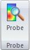
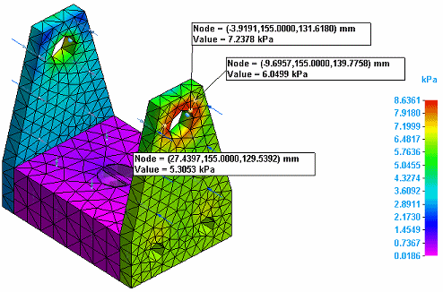
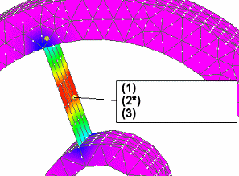

Probing analysis results
Use the Probe command in the Simulation Results environment to display the analysis values, location, and relative displacement for each result node in the model.


Displaying node analysis results
When you select the Probe command, an empty Probe Table is displayed. Use the table to interact with the results data on the model by selecting nodes, faces, or edges.
-
Select the Node option when you want to click individual geometry nodes at the intersections of mesh elements on the model. As you click each node, its values are added to the Probe Table and shown as a temporary label on the model.
-
Select the Face option to populate the Probe Table with all the node data at once for a selected face or surface. As you select each face, it is added to the Selected Faces list in the Probe Table. You can remove unwanted entities from this list using the Delete button
 . Then use the Update button to load the stress values into the table for the selected faces.
. Then use the Update button to load the stress values into the table for the selected faces. -
Select the Edge option when you want to examine all the node data at once for an edge. Use the Update button to load the stress values into the table for the selected edge.
-
The probe labels and data points are removed when you change the node selection method or when you close the Probe Table. To preserve the information, you can copy (Ctrl+C) and paste (Ctrl+V) the data into another document, such as a CSV file.
For more information, see Display node analysis data.
Node data labels and format
The node data label shows the numerical analysis results in a box-shaped callout with a white background. This makes the data easy to read, especially when superimposed on a dark model background or a window with gradient shading. You can change the default display color of node points on the model by changing the Node color setting on the Simulation tab (Solid Edge Options dialog box).
The basic information displayed in the node data label consists of node location and stress value, in this format:
-
Node=(X, Y, Z) Units
Value=Value Units
If applicable to the study type, you can use the Show displacement check box in the Probe Table to control the display of relative displacement values in the node data label.
-
Node=(X,Y,Z) Units
Value=Value Units
Deformation=Δ(DX,DY,DZ) Units
Displaying node data for plates
You can use the Plate Thickness option on the Home tab→Show group→Display Options menu to add and remove thickness on a plate surface. This also changes how node values are displayed in the probe callout.
When the Plate Thickness check box is selected, plots are displayed on all of the surfaces of the thickened plate. You can select nodes on both sides of the plate, and you can clearly see which side of the thickened plate the probed node is located on. This node value is displayed in the callout.
If you clear the check box to remove the thickness and then select a node on the 2D surface, two node values are displayed in the callout, even though one node is highlighted by the probe.
-
The callout shows three values:
-
(1) The location of the selected node.
-
(2) A value for the top side of the plate (Top).
-
(3) A value for the bottom side of the plate (Bot).
-
-
An asterisk (*) identifies the value that is visible in the current view orientation.
|
Probe callout data |
Displayed as |
Example |
|
(1) |
Node (X,Y,Z location) |
Node=(-2.6, 1, 1.5) in |
|
(2*) |
Value (Top Plate) |
Value (Top)*=18.1 ksi |
|
(3) |
Value (Bottom Plate) |
Value (Bot)=18.2 ksi |

Graphing nodal results for a study
When probing the results of a transient heat transfer study, you can graph the stress data at each time step for nodes selected in the Probe Table. For a harmonic response study, you can graph the displacement (translation) data at each frequency selected in the table. Use the Show Graph button to show the stress data in graphical form. Probe labels matching each of the selected nodes are displayed in the simulation results, color-coded to match the data in the graph.
This graph shows the selected node data for a transient heat study.


For more information, see the following help topics: